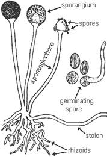

| Home |
| SUNFLOWER |
MAJOR DISEASES |
| 1. Root rot or charcoal rot |
| 2. Leaf blight |
| 3. Rust |
| 4. Head rot |
| 5. Powdery mildew |
| 6. Basal rot |
| 7. Necrosis |
| Questions |
| Download Notes |
SUNFLOWER :: MAJOR DISEASE :: HEAD ROT
Head rot - Rhizopussp.
Symptoms
The affected heads show water soaked lesions on the lower surface, which later turn brown. The discoloration may extend to stalk from head. The affected portions of the head become soft and pulpy and insects are also seen associated with the putrified tissues. The larvae and insects which attack the head pave way for the entry of the fungus which attacks the inner part of the head and the developing seeds. The seeds are converted into a black powdery mass. The head finally withers and droops down with heavy fungal mycelial nets.
Symptoms |
|
Pathogen
Pathogen produces dark brown or black coloured, non-septate hyphae. It produces many aerial stolens and rhizoids. Sproangia are globose and black in colour with a central columella. The sporangiospores are aplanate, dark coloured and ovoid.
|  |
Structure of Rhizopus |
Favourable Conditions
- Prolonged rainy weather at flowering.
- Ddamages caused by insects and caterpillars.
Disease Cycle
The fungus survives as a saprophyte in host debris and other crop residues. The disease is spread by wind blown spores.
Management
- Treat the seeds with thiram or carbendazim at 2g/kg.
- Control the caterpillars feeding on the heads.
- Spray the head with Mancozeb at 2kg/ha during intermittent rainy season and repeat after 10 days, if the humid weather persists.